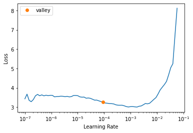

blurr is a libray I started that integrates huggingface transformers with the world of fastai v2, giving fastai devs everything they need to train, evaluate, and deploy transformer specific models. In this article, I provide a simple example of how to use blurr’s new summarization capabilities to train, evaluate, and deploy a BART summarization model.
Author
Wayde Gilliam
Published
May 23, 2020
# only run this cell if you are in collab# !pip install transformers -Uqq# !pip install datasets -Uqq# !pip install bert-score -Uqq# !pip install sacremoses# !pip install ohmeow-blurr -Uqq
Requirement already satisfied: sacremoses in /usr/local/lib/python3.7/dist-packages (0.0.53)
Requirement already satisfied: tqdm in /usr/local/lib/python3.7/dist-packages (from sacremoses) (4.64.0)
Requirement already satisfied: joblib in /usr/local/lib/python3.7/dist-packages (from sacremoses) (1.1.0)
Requirement already satisfied: regex in /usr/local/lib/python3.7/dist-packages (from sacremoses) (2019.12.20)
Requirement already satisfied: click in /usr/local/lib/python3.7/dist-packages (from sacremoses) (7.1.2)
Requirement already satisfied: six in /usr/local/lib/python3.7/dist-packages (from sacremoses) (1.15.0)
We’re going to use to use the datasets library from huggingface to grab your raw data. This package gives you access to all kinds of NLP related datasets, explanations of each, and various task specific metrics to use in evaluating your model. The best part being everything comes down to you in JSON! This makes it a breeze to get up and running quickly!
We’ll just use a subset of the training set to build both our training and validation DataLoaders
LONDON, England (Reuters) -- Harry Potter star Daniel Radcliffe gains access to a reported £20 million ($41.1 million) fortune as he turns 18 on Monday, but he insists the money won't cast a spell on him. Daniel Radcliffe as Harry Potter in "Harry Potter and the Order of the Phoenix" To the disappointment of gossip columnists around the world, the young actor says he has no plans to fritter his cash away on fast cars, drink and celebrity parties. "I don't plan to be one of those people who, as soon as they turn 18, suddenly buy themselves a massive sports car collection or something simila...
Harry Potter star Daniel Radcliffe gets £20M fortune as he turns 18 Monday .\nYoung actor says he has no plans to fritter his cash away .\nRadcliffe's earnings from first five Potter films have been held in trust fund .
42c027e4ff9730fbb3de84c1af0d2c506e41c3e4
1
Editor's note: In our Behind the Scenes series, CNN correspondents share their experiences in covering news and analyze the stories behind the events. Here, Soledad O'Brien takes users inside a jail where many of the inmates are mentally ill. An inmate housed on the "forgotten floor," where many mentally ill inmates are housed in Miami before trial. MIAMI, Florida (CNN) -- The ninth floor of the Miami-Dade pretrial detention facility is dubbed the "forgotten floor." Here, inmates with the most severe mental illnesses are incarcerated until they're ready to appear in court. Most often, they...
Mentally ill inmates in Miami are housed on the "forgotten floor"\nJudge Steven Leifman says most are there as a result of "avoidable felonies"\nWhile CNN tours facility, patient shouts: "I am the son of the president"\nLeifman says the system is unjust and he's fighting for change .
ee8871b15c50d0db17b0179a6d2beab35065f1e9
2
MINNEAPOLIS, Minnesota (CNN) -- Drivers who were on the Minneapolis bridge when it collapsed told harrowing tales of survival. "The whole bridge from one side of the Mississippi to the other just completely gave way, fell all the way down," survivor Gary Babineau told CNN. "I probably had a 30-, 35-foot free fall. And there's cars in the water, there's cars on fire. The whole bridge is down." He said his back was injured but he determined he could move around. "I realized there was a school bus right next to me, and me and a couple of other guys went over and started lifting the kids off t...
NEW: "I thought I was going to die," driver says .\nMan says pickup truck was folded in half; he just has cut on face .\nDriver: "I probably had a 30-, 35-foot free fall"\nMinnesota bridge collapsed during rush hour Wednesday .
06352019a19ae31e527f37f7571c6dd7f0c5da37
3
WASHINGTON (CNN) -- Doctors removed five small polyps from President Bush's colon on Saturday, and "none appeared worrisome," a White House spokesman said. The polyps were removed and sent to the National Naval Medical Center in Bethesda, Maryland, for routine microscopic examination, spokesman Scott Stanzel said. Results are expected in two to three days. All were small, less than a centimeter [half an inch] in diameter, he said. Bush is in good humor, Stanzel said, and will resume his activities at Camp David. During the procedure Vice President Dick Cheney assumed presidential power. Bu...
Five small polyps found during procedure; "none worrisome," spokesman says .\nPresident reclaims powers transferred to vice president .\nBush undergoes routine colonoscopy at Camp David .
24521a2abb2e1f5e34e6824e0f9e56904a2b0e88
4
(CNN) -- The National Football League has indefinitely suspended Atlanta Falcons quarterback Michael Vick without pay, officials with the league said Friday. NFL star Michael Vick is set to appear in court Monday. A judge will have the final say on a plea deal. Earlier, Vick admitted to participating in a dogfighting ring as part of a plea agreement with federal prosecutors in Virginia. "Your admitted conduct was not only illegal, but also cruel and reprehensible. Your team, the NFL, and NFL fans have all been hurt by your actions," NFL Commissioner Roger Goodell said in a letter to Vick....
NEW: NFL chief, Atlanta Falcons owner critical of Michael Vick's conduct .\nNFL suspends Falcons quarterback indefinitely without pay .\nVick admits funding dogfighting operation but says he did not gamble .\nVick due in federal court Monday; future in NFL remains uncertain .
7fe70cc8b12fab2d0a258fababf7d9c6b5e1262a
We begin by getting our hugginface objects needed for this task (e.g., the architecture, tokenizer, config, and model). We’ll use blurr’s get_hf_objects helper method here.
Next we need to build out our DataBlock. Remember tha a DataBlock is a blueprint describing how to move your raw data into something modelable. That blueprint is executed when we pass it a data source, which in our case, will be the DataFrame we created above. We’ll use a random subset to get things moving along a bit faster for the demo as well.
Notice that the blurr DataBlock as been dramatically simplified given the shift to on-the-fly batch-time tokenization. All we need is to define a single Seq2SeqBatchTokenizeTransform instance, optionally passing a list to any of the tokenization arguments to differentiate the values for the input and summary sequences. In addition to specifying a custom max length for the inputs, we can also do the same for the output sequences … and with the latest release of blurr, we can even customize the text generation by passing in text_gen_kwargs.
We pass noop as a type transform for our targets because everything is already handled by the batch transform now.
It’s always a good idea to check out a batch of data and make sure the shapes look right.
b = dls.one_batch()len(b), b[0]['input_ids'].shape, b[1].shape
(2, torch.Size([2, 256]), torch.Size([2, 66]))
Even better, we can take advantage of blurr’s TypeDispatched version of show_batch to look at things a bit more intuitively. We pass in the dls via the dataloaders argument so we can access all tokenization/modeling configuration stored in our batch transform above.
dls.show_batch(dataloaders=dls, max_n=2)
text
target
0
<s> You wanted to know more about greenwashing, and Scot Case, from environmental marketing firm TerraChoice, answered. Greenwashing expert Scot Case of TerraChoice. "Why are green products often more expensive than ones that don't say they are green or environmentally friendly? Is it just because green has become a new form of 'premium brand'? Isn't this bad news if we want to make more people environmentally aware when they go shopping?" Harriet Gladwell. Case: First, it should be noted that not all greener products are more expensive. The remanufactured toner cartridges I purchase at a nationwide office-supply store, for example, carry the same warranty as other cartridges at a 30-percent lower cost. This greener option is less expensive because the manufacturer avoids the cost of manufacturing the plastic and electronic components. They simply reuse the parts from recycled cartridges. There are also greener products that do not cost extra. There are cleaning products and paints, for example, that have been certified as meeting tough environmental standards by EcoLogo or Green Seal that deliver the same high-quality performance one expects without costing any extra. Other greener products might be slightly more expensive initially, but generate substantial savings for the consumer. Energy-efficient compact fluorescent lightbul</s>
Scot Case answers your questions on greenwashing.\nHas green become a new form of "premium brand"?\nWhat green words and phrases should raise a red flag?\nClick here to read more answers to your questions.
1
<s> (CNN) -- Commentators who have watched the conflict in Northern Ireland play out for decades call the peace process a miracle. Various leaders negotiated for years to bring an end to Northern Ireland's "troubles." Culminating in a power sharing deal between Ulster's unionists, led by Ian Paisley, and Sinn Fein, the political arm of the IRA (nationalists), led by Gerry Adams, the road to peace has been a torturous one characterized by violence, set-backs and numerous false starts. Only recently the Ulster Defence Association, Northern Ireland's largest loyalist group, said it will cease to be an armed paramilitary group, starting at midnight on November 11, saying the "war is over." "All weaponry will be put beyond use," Colin Halliday of the Ulster Political Research Group, which is linked to the group, said in a speech in Belfast aired by RTE, Ireland's state-owned broadcaster. "The struggle to maintain the union is on a new and more complex battlefield." The Irish Republican Army (IRA) disarmed two years ago, helping to restore the province's government in Belfast. Irish Prime Minister Bertie Ahern said the most recent moves of groups to disarm was "significant and hopefully signals a further step</s>
Some commentators have called the peace process in Northern Ireland a "miracle"\nIt culminated in a power sharing deal between the Ulster's unionists and Sinn Fein.\nPeace and prosperity would not have occurred without diplomacy.
Training
We’ll prepare our BART model for training by wrapping it in blurr’s BaseModelWrapper object and using the callback, BaseModelCallback, as usual. A new Seq2SeqMetricsCallback object allows us to specify Seq2Seq metrics we want to use, things like rouge and bertscore for tasks like summarization as well as metrics such as meteor, bleu, and sacrebleu for translations tasks. Using huggingface’s metrics library is as easy as specifying a metrics configuration such as below.
Once we have everything in place, we’ll freeze our model so that only the last layer group’s parameters of trainable. See here for our discriminitative learning rates work in fastai.
Note: This has been tested with ALOT of other Seq2Seq models; see the docs for more information.
Still experimenting with how to use fastai’s learning rate finder for these kinds of models. If you all have any suggestions or interesting insights to share, please let me know. We’re only going to train the frozen model for one epoch for this demo, but feel free to progressively unfreeze the model and train the other layers to see if you can best my results below.
learn.lr_find()
SuggestedLRs(valley=9.120108734350652e-05)

It’s also not a bad idea to run a batch through your model and make sure the shape of what goes in, and comes out, looks right.
b = dls.one_batch()preds = learn.model(b[0])len(preds),preds[0], preds[1].shape
And now we can look at the generated predictions using our text_gen_kwargs above
learn.show_results(learner=learn, max_n=2)
text
target
prediction
0
(CNN) -- To some, she was a lifelong role model. Others call Pakistan's former prime minister and the first female prime minister of any Muslim nation a source of inspiration to women everywhere. One I-Reporter acknowledges, "I never was a political supporter of Benazir Bhutto but now after her death I feel that her loss is a loss for Pakistan, not just her political supporters." Anthony G. Moore photographed Benazir Bhutto with her husband Asif Ali Zardari in New York in 2006. Benazir Bhutto was assassinated during a suicide bombing on December 27, 2007, and I-Reporters from all over the world responded with their memories and condolences. Below are selections, some of which have been edited for length and clarity. Farhad Sethi of Lahore, Pakistan Breathing in the air of grief and sadness, the nation suffers the loss of our beloved leader Benazir Bhutto, an institution in herself withstanding pressures at times when suicide bombing has become an unstoppable enigma. A sniper pierced a bullet through her neck and our enthusiastic leader couldn't even make it to the hospital, her last words God knows what were they but her face and inspirational personality will always be remembered. A
Former Pakistani Prime Minister Benazir Bhutto is assassinated.\nI-Reporters from around the world offer condolences, memories.\n"We Pakistanis are proud to acknowledge her," says one I-Reporter.\nI-Report: Share your memories, condolences, photos of Benazir Bhutto.
[ Benazir Bhutto was assassinated during a suicide bombing on December 27, 2007 .\nI-Reporters from all over the world responded with their memories and condolences .\n"Her loss is a loss for Pakistan, not just her political supporters," one I-Reporter said ., Men's college basketball season comes to an end with the NCAA Tournament .\nDuke University in Durham, North Carolina, and the University of North Carolina in Chapel Hill are two of the top basketball towns .\nCollege basketball is deeply rooted in North Carolina culture, thanks to the success of the two universities .\nNorth Carolina and Duke fans are passionate and passionate about the sport .\nThe sport has its roots in the YMCA, where James Naismith invented basketball .]
Even better though, blurr augments the fastai Learner with a blurr_summarize method that allows you to use huggingface’s PreTrainedModel.generate method to create something more human-like.
test_article ="""The past 12 months have been the worst for aviation fatalities so far this decade - with the total of number of people killed if airline crashes reaching 1,050 even before the Air Asia plane vanished. Two incidents involving Malaysia Airlines planes - one over eastern Ukraine and the other in the Indian Ocean - led to the deaths of 537 people, while an Air Algerie crash in Mali killed 116 and TransAsia Airways crash in Taiwan killed a further 49 people. The remaining 456 fatalities were largely in incidents involving small commercial planes or private aircraft operating on behalf of companies, governments or organisations. Despite 2014 having the highest number of fatalities so far this decade, the total number of crashes was in fact the lowest since the first commercial jet airliner took off in 1949 - totalling just 111 across the whole world over the past 12 months. The all-time deadliest year for aviation was 1972 when a staggering 2,429 people were killed in a total of 55 plane crashes - including the crash of Aeroflot Flight 217, which killed 174 people in Russia, and Convair 990 Coronado, which claimed 155 lives in Spain. However this year's total death count of 1,212, including those presumed dead on board the missing Air Asia flight, marks a significant rise on the very low 265 fatalities in 2013 - which led to it being named the safest year in aviation since the end of the Second World War. Scroll down for videos. Deadly: The past 12 months have been the worst for aviation fatalities so far this decade - with the total of number of people killed if airline crashes reaching 1,158 even before the Air Asia plane (pictured) vanished. Fatal: Two incidents involving Malaysia Airlines planes - one over eastern Ukraine (pictured) and the other in the Indian Ocean - led to the deaths of 537 people. Surprising: Despite 2014 having the highest number of fatalities so far this decade, the total number of crashes was in fact the lowest since the first commercial jet airliner took off in 1949. 2014 has been a horrific year for Malaysia-based airlines, with 537 people dying on Malaysia Airlines planes, and a further 162 people missing and feared dead in this week's Air Asia incident. In total more than half the people killed in aviation incidents this year had been flying on board Malaysia-registered planes. In January a total of 12 people lost their lives in five separate incidents, while the same number of crashes in February killed 107. """
We can override the text_gen_kwargs we specified for our DataLoaders when we generate text using blurr’s Learner.blurr_generate method
=== Prediction 1 ===
{'summary_texts': [' 2014 has been worst year for aviation fatalities so far this decade - with 1,158 deaths .\nTotal death count of 1,212, including those presumed dead on board missing Air Asia flight, marks a significant rise on the very low 265 fatalities in 2013 .\nThe total number of crashes was in fact the lowest since the first commercial jet airliner took off in 1949 - totalling just 111 across the whole world over the past 12 months .\nTwo incidents involving Malaysia Airlines planes - one over eastern Ukraine and the other in the Indian Ocean - led to the deaths of 537 people .', ' 2014 has been worst year for aviation fatalities so far this decade - with 1,158 deaths .\nTotal death count of 1,212, including those presumed dead on board missing Air Asia flight, marks a significant rise on the very low 265 fatalities in 2013 .\nThe total number of crashes was in fact the lowest since the first commercial jet airliner took off in 1949 - totalling just 111 across the whole world over the past 12 months .\n2014 has been a horrific year for Malaysia-based airlines, with 537 people dying on Malaysia Airlines planes .', ' 2014 has been worst year for aviation fatalities so far this decade - with 1,158 deaths .\nTotal death count of 1,212, including those presumed dead on board missing Air Asia flight, marks a significant rise on the very low 265 fatalities in 2013 .\nThe total number of crashes was in fact the lowest since the first commercial jet airliner took off in 1949 - totalling just 111 across the whole world over the past 12 months .']}
[{'summary_texts': ' 2014 has been worst year for aviation fatalities so far this decade - with 1,158 deaths .\nTotal death count of 1,212, including those presumed dead on board missing Air Asia flight, marks a significant rise on the very low 265 fatalities in 2013 .\nThe total number of crashes was in fact the lowest since the first commercial jet airliner took off in 1949 - totalling just 111 across the whole world over the past 12 months .\nTwo incidents involving Malaysia Airlines planes - one over eastern Ukraine and the other in the Indian Ocean - led to the deaths of 537 people .'}]
That’s it
blurr supports a number of huggingface transformer model tasks in addition to summarization (e.g., sequence classification , token classification, and question/answering, causal language modeling, and transation). The docs include examples for each of these tasks if you’re curious to learn more.
For more information about ohmeow or to get in contact with me, head over to ohmeow.com for all the details.